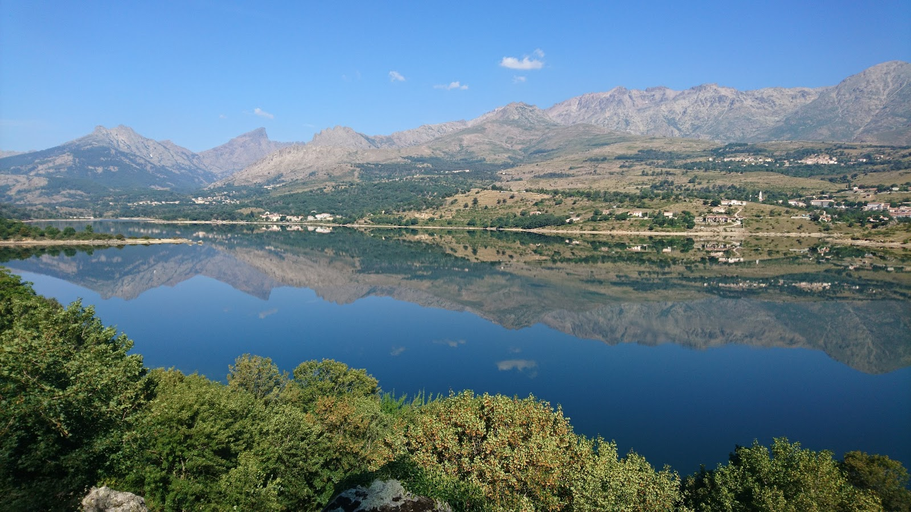
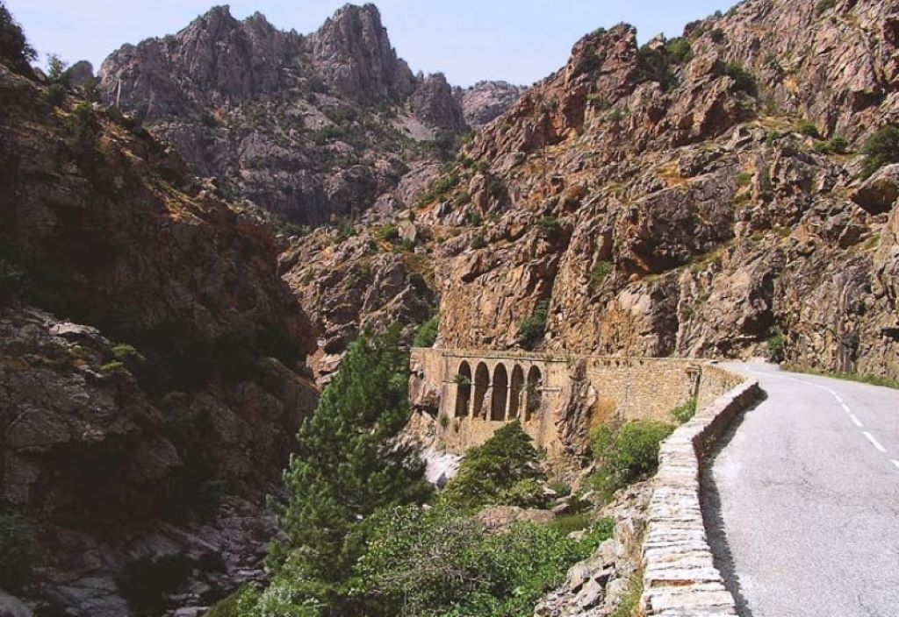
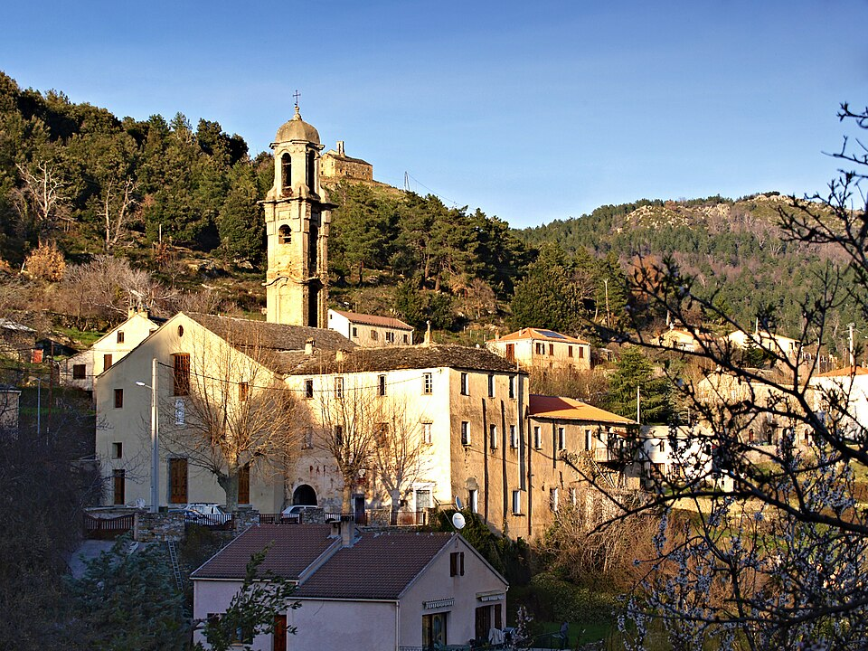
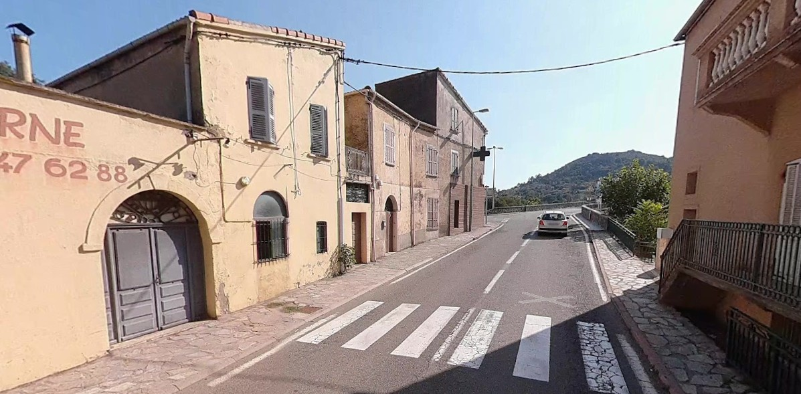
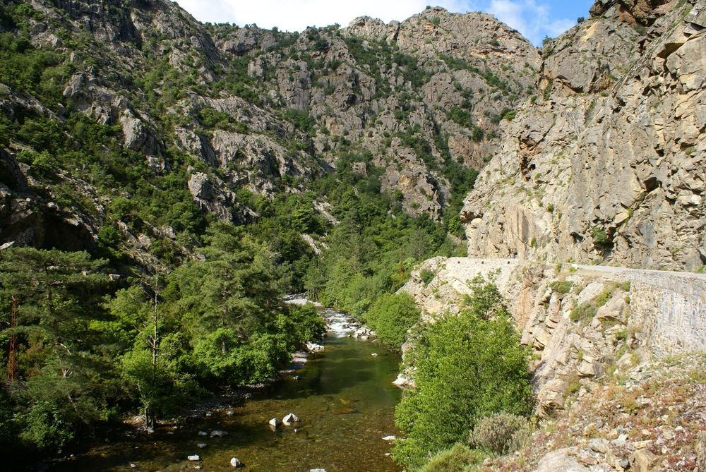
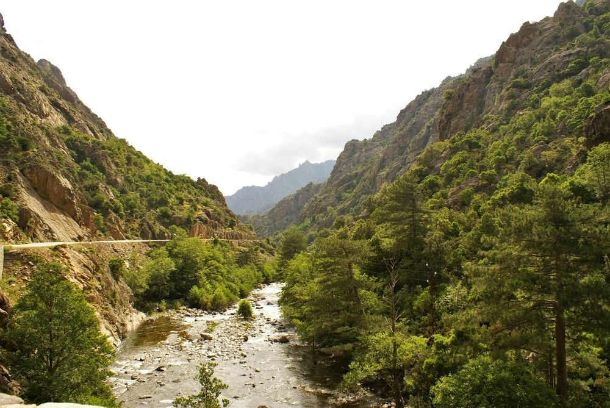
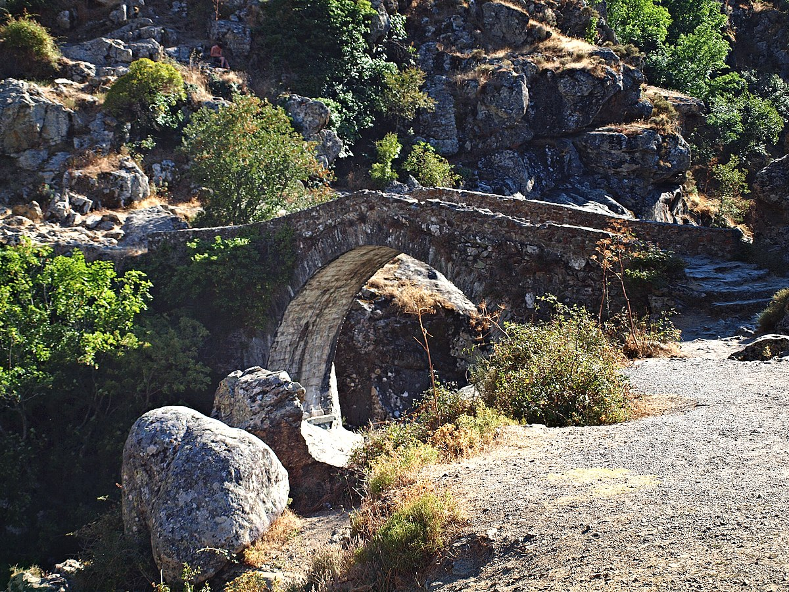
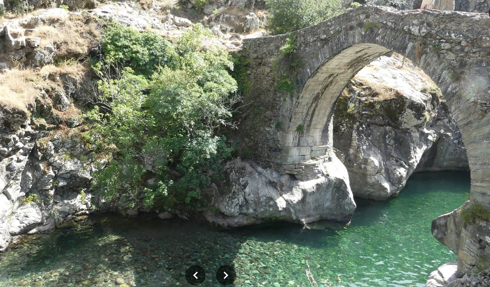
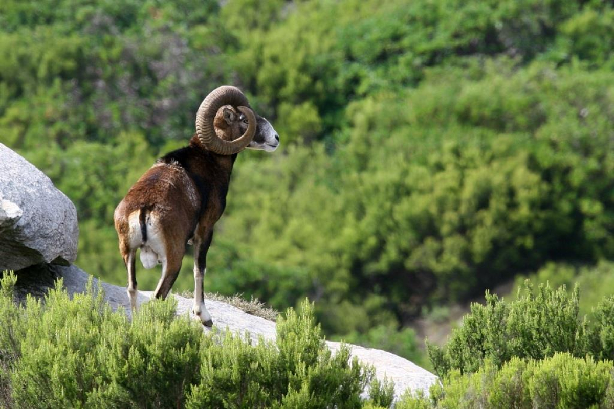
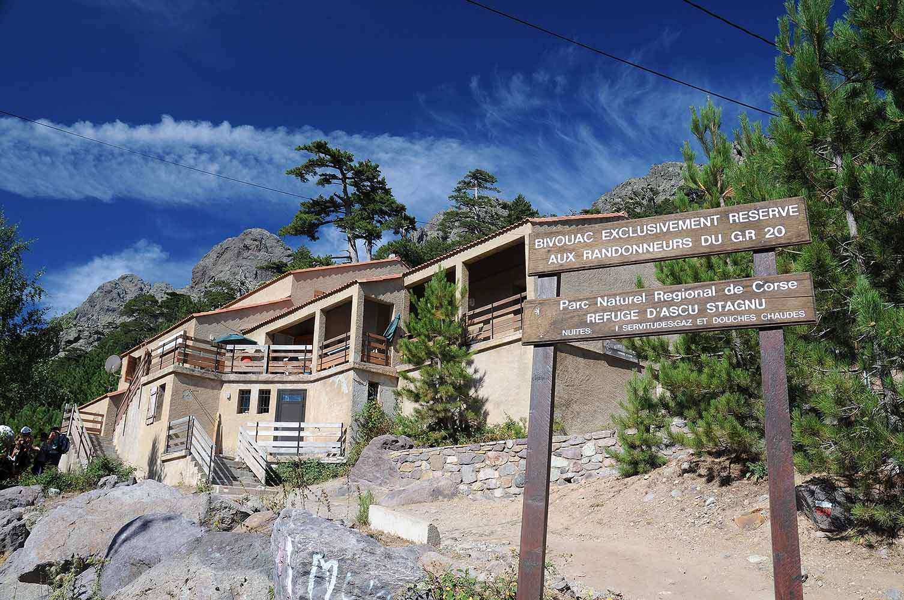

DAY04: Niolo és Asco völgy, Scala di Santa Regina, Morosaglia, Ponte Leccia, Haut-Asco
Ez egy fantasztikus motoros útvonal, amely Korzika két legvadabb és legimpozánsabb völgyét, a Niolo-t és az Asco-völgyet köti össze a látványos Scala di Santa Regina kanyonon keresztül. Az útvonalad a magashegyi hágóktól (Col de Vergio környéke) levisz a folyóvölgybe, majd újra felkapaszkodik Korzika legmagasabb csúcsának lábához.
A mérés automatikusan indul oldalnyitáskor, majd 5 mp múlva frissít.
A távolságok minden célpontnál frissülnek, és az oldal a legvalószínűbb következő pontra ugrik.
A mérés automatikusan indul oldalnyitáskor, majd 5 mp múlva frissít.
A távolságok minden célpontnál frissülnek, és az oldal a legvalószínűbb következő pontra ugrik.
1. Lac de Calacuccia (Calacuccia-tó és Gát)
42.334361, 9.019304
mérés: várakozás
távolság: —
Ez a mesterséges tó a Niolo-medence szívében található, 793 méteres tengerszint feletti magasságban. A tavat létrehozó gátat 1965 és 1968 között építették a Golo folyón, hogy villamos energiával lássák el a szigetet és szabályozzák a vízellátást. A duzzasztógát 72 méter magas és 265 méter hosszú a koronájánál, a tó vízfelülete pedig 130 hektárt foglal el. A tározó maximális kapacitása eléri a 25 millió köbmétert, és kulcsszerepet játszik Korzika nyári vízigényének kielégítésében, különösen a keleti partvidék mezőgazdasága számára. A víz alatti területen egykori legelők és kisebb épületek maradványai fekszenek, amelyek alacsony vízállásnál néha láthatóvá válnak.

2. Scala di Santa Regina (Sziklaszoros)
42.358310, 9.058570
mérés: várakozás
távolság: —
Ez a szurdokvölgy Korzika egyik legvadabb és legtechnikásabb motoros útszakasza, ahol a D84-es út a Golo folyó által vájt gránitfalakba kapaszkodik. Az út építése a 19. század végén zajlott, előtte csak egy veszélyes öszvérösvény biztosította a kapcsolatot a Niolo és a síkság között. A sziklafalak merőlegesen zuhannak a mélybe, a völgy neve ("Szent Királynő Lépcsője") a sziklaalakzatok lépcsőzetes elrendezésére és egy Szűz Máriához kötődő legendára utal. Az útburkolat itt gyakran szűk, és a beláthatatlan kanyarok miatt fokozott figyelmet igényel, különösen a szembejövő forgalom miatt. Ez az egyetlen közúti kijárat a Niolo-medencéből kelet felé, így stratégiai jelentősége a történelem során a genovai megszállás alatt is kiemelkedő volt.

3. Morosaglia (Castagniccia kapuja)
42.437817, 9.309028
mérés: várakozás
távolság: —
Ponte Lecciától keletre, a hegyek felé indulva éred el Morosaglia környékét, amely már a Castagniccia (Gesztenyevidék) régióhoz tartozik. Ez a terület Pasquale Paoli, a "korzikai nemzet atyjának" szülőhelye, aki itt született 1725-ben. A falu múzeuma az ő életét és a független Korzika rövid időszakát mutatja be, ezt meg is nézzük most. A régió sűrű gesztenyeerdőiről kapta nevét, amelyek évszázadokon át a lakosság fő élelemforrását biztosították (gesztenyeliszt). Az utak itt keskenyek és kanyargósak, igazi motoros paradicsom.

4. Ponte Leccia (Csomópont)
42.462267, 9.206204
mérés: várakozás
távolság: —
Bár építészetileg kevésbé látványos, Ponte Leccia Korzika legfontosabb közlekedési csomópontja a sziget belső részén ("Korzika köldöke"). Itt találkozik a T20-as (Bastia-Ajaccio) és a T30-as (Calvi felé) főút, valamint a sziget vasúthálózata is itt ágazik el három irányba. A település mindössze 193 méter magasan fekszik, itt a Golo folyó völgye kiszélesedik, és a hőmérséklet nyáron gyakran eléri a 40 Celsius-fokot, mivel a környező hegyek megrekedtetik a hőt. A település híres a "Ponte Leccia-i hídról" (Pont de Ponte Leccia), amely egy genovai stílusú, de modernizált híd a Golo felett. Gazdasági szempontból ez a régió kereskedelmi központja, itt található az egyetlen nagyobb szupermarket és benzinkút a környező völgyek ellátására.

5. Vallée de l'Asco (Asco-völgy bejárata)
42.477176, 9.185817
mérés: várakozás
távolság: —
Ponte Lecciától északra fordulva a D147-es útra térsz rá, amely az Asco-folyó völgyébe vezet. Ez a völgy geológiailag eltér a Niolo-tól; a kőzetek itt sötétebb vulkanikus eredetűek (riolit és ignimbrit) a gránit mellett. A völgy bejáratánál az út szélesebb, de ahogy haladsz befelé, drasztikusan összeszűkül. Az Asco folyó hossza 34 km, és közvetlenül a Monte Cinto masszívumából ered, ezért vize még nyáron is rendkívül hideg. A völgy növényzete a tengerszint feletti magasság emelkedésével gyorsan változik a mediterrán cserjéstől a magashegyi fenyvesekig.

6. Gorges de l'Asco - Alsó szakasz
42.465000, 9.102000
mérés: várakozás
távolság: —
Moltifao felé közeledve a szurdok újra összeszűkül, de itt a sziklafalak már kevésbé magasak, mint fentebb. Az út követi a folyó kanyarulatait, a növényzet pedig egyre inkább mediterrán jellegűvé válik: megjelennek az olajfák és a leanderek a folyóparton. Ez a szakasz motorozás szempontjából gyorsabb, jobban belátható kanyarokkal, mint a felső rész. A folyó sodrása itt lassul, medre kiszélesedik, és nagy hordalékpadokat épít.

7. Asco (Falu)
42.452898, 9.032729
mérés: várakozás
távolság: —
Asco falu 600 méteres magasságban fekszik, és sokáig elszigeteltségben élt, mivel a völgybe vezető utat csak a 20. században építették ki teljesen. A település híres méztermeléséről; a korzikai méz (Mele di Corsica) oltalom alatt álló eredetmegjelölésű (AOP) termék, az itteni gesztenyeméz különösen karakteres ízű. A falu építészete robusztus, a házak vastag gránitfalai a kemény telek ellen nyújtanak védelmet. Asco történelmileg "pásztorfalu" volt, a lakosság nagy része a nyarakat a hegyekben (transhumance), a teleket a faluban töltötte. A lakosság száma ma már alig haladja meg a 100 főt, de a turizmus miatt a nyári szezonban élénk a forgalom.

8. Pont Génois d'Asco (Genovai híd Asco alatt)
42.446819, 9.031483
mérés: várakozás
távolság: —
Asco falu alatt, a folyó felett ível át ez a középkori híd, amely a Genovai Köztársaság uralma alatt (15-16. század) épült. A híd jellegzetes "szamárhátív" alakú, kőből épült szerkezet, amelyet úgy terveztek, hogy ellenálljon a folyó hirtelen áradásainak. A genovaiak több mint 100 hasonló hidat építettek Korzikán a kereskedelem és a katonai mozgások elősegítésére. Ma már csak gyalogos forgalomra használják, de kiváló fotótéma és történelmi emlék. Közvetlenül a híd alatt népszerű fürdőhely található, ahol a víz kristálytiszta és türkizkék árnyalatú.

9. Pont de Roggia (Roggia-híd)
42.437039, 8.995992
mérés: várakozás
távolság: —
Egy régi kőhíd, amely az Asco folyó egyik mellékága felett ível át, nem messze a főúttól. Bár kevésbé ismert, mint a genovai hidak, ez a híd fontos szerepet játszott a pásztorok közlekedésében a legelők felé. A híd alatt a víz sebessége felgyorsul, és kisebb vízeséseket alkot a kövek között. A környék növényzetében megjelenik a paratölgy és a magyaltölgy, jelezve, hogy alacsonyabb tengerszint feletti magasságba értél.

10. Maison du Mouflon (Muflon-ház)
42.424618, 8.965808
mérés: várakozás
távolság: —
Asco faluban található ez az ökomúzeum, amely a korzikai muflonok életmódját és védelmét mutatja be. A múzeum statisztikái szerint az 1970-es években a muflonok majdnem kipusztultak, de a védelmi programoknak köszönhetően állományuk mára stabilizálódott. Az épület maga is érdekes, hagyományos korzikai kőépítészetet tükröz. A kiállítás bemutatja a völgy geológiáját és növényvilágát is, jó áttekintést adva arról a tájról, amin éppen átmotorozol.

11. Station du Haut-Asco (Haut-Asco síállomás és Stagnu-fennsík)
42.403298, 8.921027
mérés: várakozás
távolság: —
Az út vége és az útvonalad végpontja, amely 1450 méteres magasságban található a Stagnu-fennsíkon. Ez volt Korzika egyik legendás síközpontja, amely az 1980-as években bezárt, majd 2016-ban újranyitott modernizált felvonókkal. Innen indul a legnépszerűbb túraútvonal a Monte Cinto csúcsára (2706 m), amely a sziget legmagasabb pontja. A helyszín a GR20 túraútvonal egyik kulcsfontosságú állomása; 2015-ben a hírhedt Cirque de la Solitude lezárása után a GR20 nyomvonalát erre terelték át. A táj itt már alpesi jellegű, sziklás csúcsokkal, ritkás növényzettel és gyakran még nyár elején is hófoltokkal.

Térkép